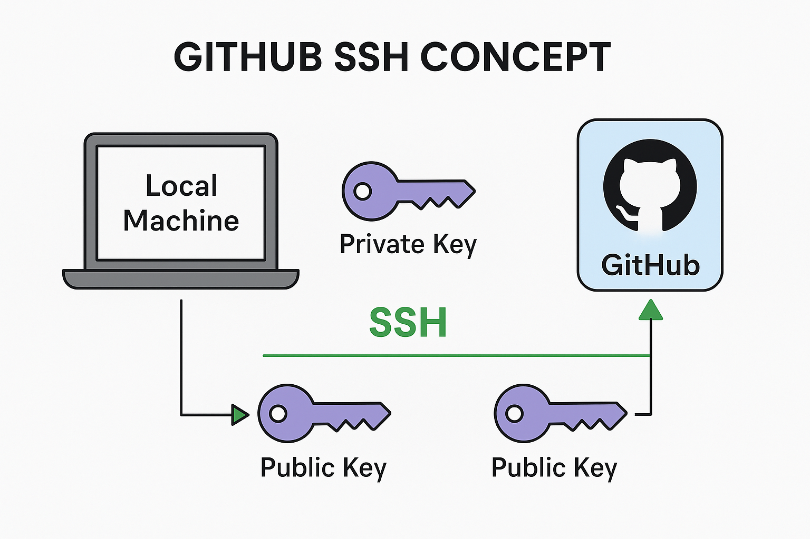
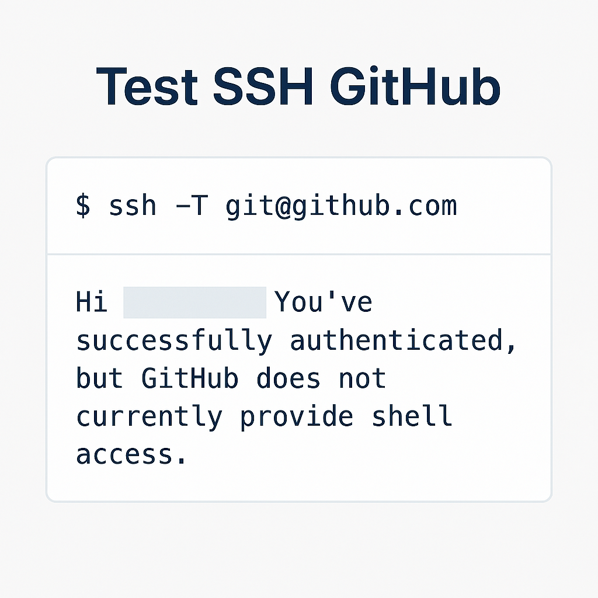

Clone a GitHub Repository
Git Clone (HTTPS)
To clone a GitHub repository using the HTTPS link, go to the desired GitHub repository, click on the green Code button, and copy the HTTPS URL.
Use the following command to clone:
git clone https://github.com/username/repo-name.gitGit Clone (SSH)
If you’ve set up SSH keys with your GitHub account, you can clone using SSH for a more secure connection. Copy the SSH URL from the Code dropdown.
Use the command:
git clone git@github.com:username/repo-name.gitSwitching Between HTTPS and SSH
If you cloned using HTTPS but want to switch to SSH (or vice versa), you can change the remote URL using:
git remote set-url origin git@github.com:username/repo-name.gitTo verify:
git remote -vWhat is GitHub SSH?
SSH (Secure Shell) allows you to securely connect to GitHub without typing your username and password each time. It uses a pair of cryptographic keys – public and private – for authentication.
Once set up, you can use the SSH protocol for cloning, pushing, and pulling repositories without authentication popups.
Step 1: Generate SSH Key
Open a terminal (Git Bash or CMD) and use the following command to generate an SSH key pair:
ssh-keygen -t ed25519 -C "your_email@example.com"
Press Enter to accept the default location. You may set a passphrase or leave it empty.
This creates two files: a private key id_ed25519 and a public key id_ed25519.pub inside ~/.ssh.
Step 2: Add SSH Key to GitHub
Copy the contents of your public key file using the command below:
cat ~/.ssh/id_ed25519.pubThen:
- Go to GitHub → Settings → SSH and GPG keys
- Click New SSH Key
- Paste the copied content and save
Step 3: Test SSH Connection
Use the following command to test if your SSH key is properly connected:
ssh -T git@github.comIf successful, you’ll see a welcome message from GitHub.
Step 4: Clone Repository Using SSH
Once SSH is set up, you can clone a repository securely using:
git clone git@github.com:username/repo-name.git